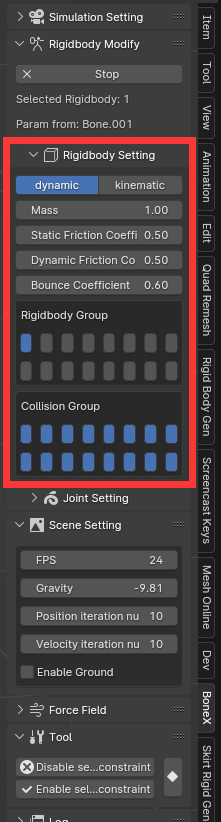

Rigid body
Basic usage
In bone pose mode, click the “Start Modify” button to access the Rigid Body modification interface. Within this interface, you have press “C” to set selected bones as rigid body bones, which allows them to be driven by physx during animations. Additionally, you can view the shape of the rigid body and change the properties of the selected rigid body bone in this mode.
note, that when a bone is set as rigid body, this addon will create a empty object at the bone call driver, and this bone will completely track to this driver. If you want to move bone manually, you can check the tool panel for more operation.
Rigid body properties
Within rigid Body modification interface, when you select a rigidody bone, you will see the property in the panel. You can change the value, then the setting will apply to the selected rigidbody bone.
Rigidbody Shape Refresh Interval: If you feel laggy in rigidbody modify mode, increase refresh interval time
Dynamic: A dynamic rigid body is a rigid body calculated by physx and will move under the action of force.
Kinematic: The kinematic rigid body is controlled by the user’s key frame animation. Its movement is absolute and not affected by any force. And it can collide with the dynamic rigid body to make dynamic rigid body motion.
Mass: The mass of a rigid body, obeying various physical laws
Damping: Resistance encountered during rigid body motion, simulating air resistance
Static Friction Coefficient: the resistance to the start of motion between two surfaces.
Dynamic Friction Coefficient: the resistance to motion when two surfaces are already sliding against each other.
Friction Force only appear when the pressure exist.
Bounce Coefficient: reflects the elasticity of the collision.
Enable Gravity: Controls whether the rigid body is affected by gravity.
Rigidbody Group: rigidbody belongs to which group. If empty is set, that means this rigidbody will not collide with any thing.
Collision Group: rigidbody will collide with which group.
If you want to disable the collision internal a certain group, then disable the collision group of their corresponding group.
For Example, I want to disable a skirt self collision. Set the rigidbody group to second layer enable, and set the collision group second layer disable, which means skirt is in second group, and skirt will not collide with rigidbody in second group.
Kinematic rigidbodies are not always needed
If a bone is set to a dynamic rigid body and it has a parent bone, the dynamic bone will be still controlled by parent bone.
Modify the Shape of Rigidbody
Switch default shape: Within rigid Body modification interface, press “T” to switch selected rigidbody shape.
Press “S” to scale the rigidbody.
Customize Rigidbody Shape: Within rigid Body modification interface, press “E” to edit selected rigidbody. Physx’s dynamic rigid body only supports convex polygons. If it is a concave polygon, it will be baked into a convex polygon according to the vertices. The baked shape can be checked in the Physx Visual Debugger. For physx, the calculation the speed of custom mesh rigid bodies is not as fast as its default shape. If there are no special needs, try to use the default shape.
Copy Rigidbody Shape: Within rigid Body modification interface, press ctrl+”M” will copy the active rigidbody shape to other selected rigidbody bone.
In Rigidbody Modify Mode, Drawing Visible Settings
Ctrl+L, Toggle whether to display rigidbody shape edges
F, Toggle whether to display rigidbody shape faces
H, Toggle whether to hide rigidbody
W, Toggle whether to display rigidbody soft connection
Ctrl+F,Toggle whether to display rigidbody in front.
Ctrl+H,Toggle whether to only display visible pose bone rigidbody shape. You can set this option to only view the visible pose bone corresponding rigidbody shape when there is too much.
Animation
A kinimatic rigidbody can be set keyframe to move and rotate to drive the dynamic rigidbody.